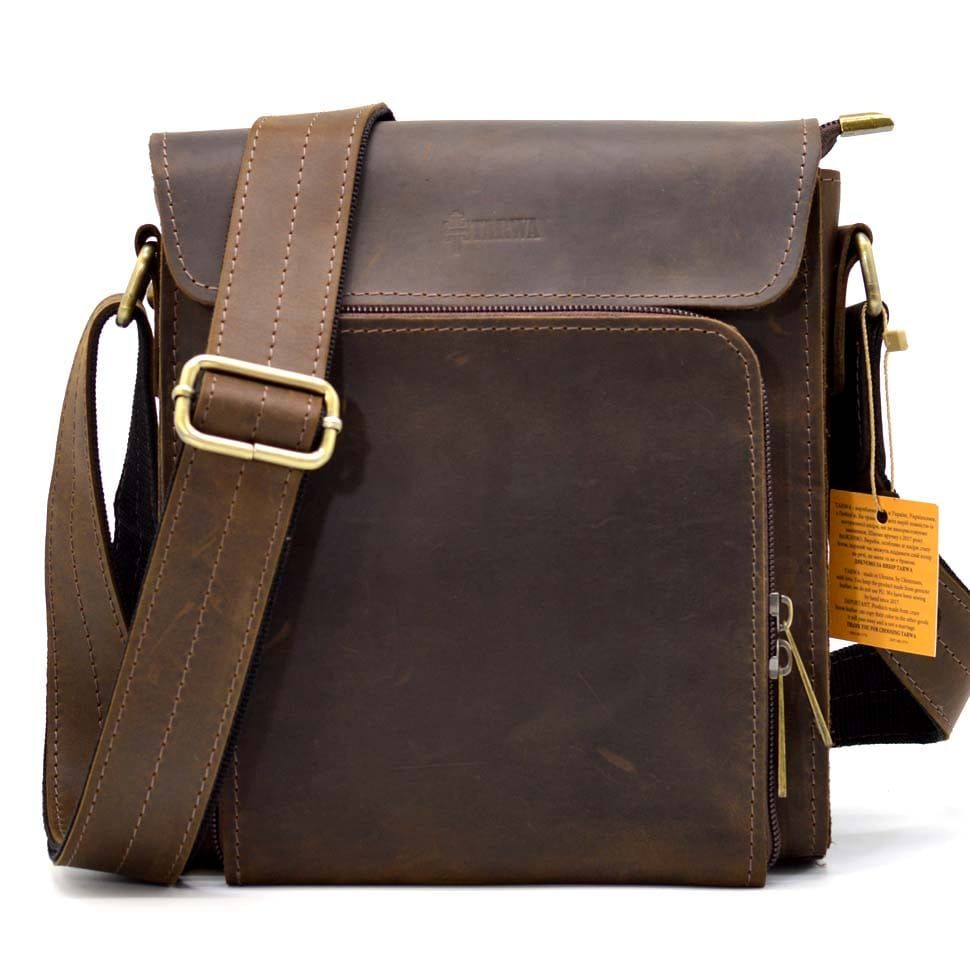
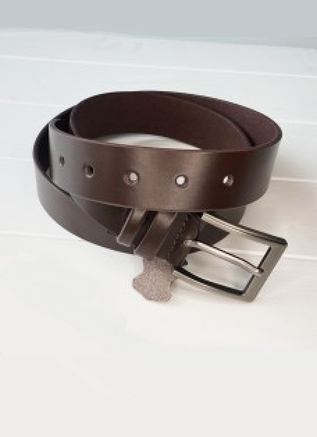
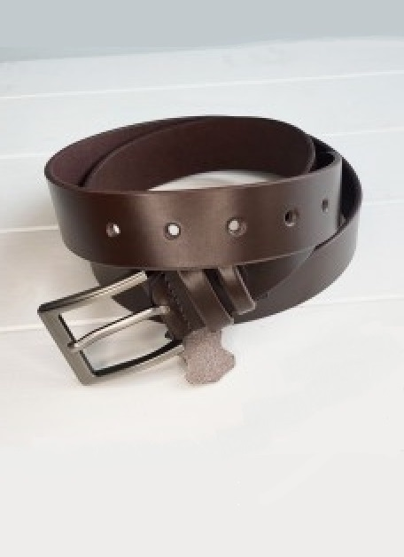
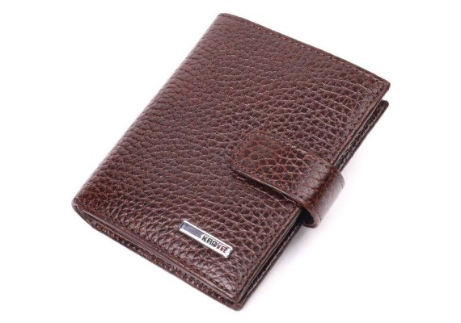

-

Шкіряна сумка ручної роботи
Шкіряна сумка ручної роботи — це унікальний шедевр, що втілює в собі гармонію якості, витонченості та уваги до деталей. Вона створена майстрами з дотриманням найвищих стандартів, кожен елемент ретельно виготовляється вручну, що підкреслює ексклюзивність цього аксесуара. Для виробництва сумки використовується натуральна шкіра преміум-класу, відома своєю надзвичайною міцністю, довговічністю та зносостійкістю. Цей благородний матеріал не лише гарантує довговічність виробу, але й із часом набуває особливого шарму. Така сумка є не просто практичним аксесуаром, а справжнім символом стилю, який розповідає свою унікальну історію з кожним роком використання.
-
 
Класичні шкіряні ремені
Класичний шкіряний ремінь — це більше, ніж просто аксесуар; це базовий елемент гардеробу, який надає кожному образу завершеності та вишуканості. Створений із натуральної шкіри найвищої якості, він поєднує у собі лаконічність і елегантність, що робить його ідеальним вибором як для формальних, так і для повсякденних стилів. Матеріал преміум-класу гарантує не лише візуальну привабливість, але й вражаючу довговічність. З часом шкіра стає ще м’якшою та приємнішою на дотик, зберігаючи водночас свою первинну форму та функціональність. Такий ремінь не просто доповнює ваш стиль — він стає незмінним супутником, здатним розповідати історію вашого вишуканого смаку.
-

Шкіряний гаманець ручної роботи
Шкіряний гаманець ручної роботи — це витончений аксесуар, який поєднує в собі високу функціональність і естетичну досконалість. Виготовлений з натуральної шкіри найвищої якості, цей гаманець стане надійним супутником для повсякденного використання, додаючи вашому образу елегантності та статусності.Головною особливістю гаманця є його ручне виготовлення, яке гарантує увагу до кожної деталі. Майстри використовують традиційні техніки обробки шкіри, що передаються з покоління в покоління, створюючи продукт, який не тільки практичний, але й справді унікальний. Кожен шов виконаний вручну з високою точністю, що забезпечує не тільки міцність виробу, але й естетичну завершеність.